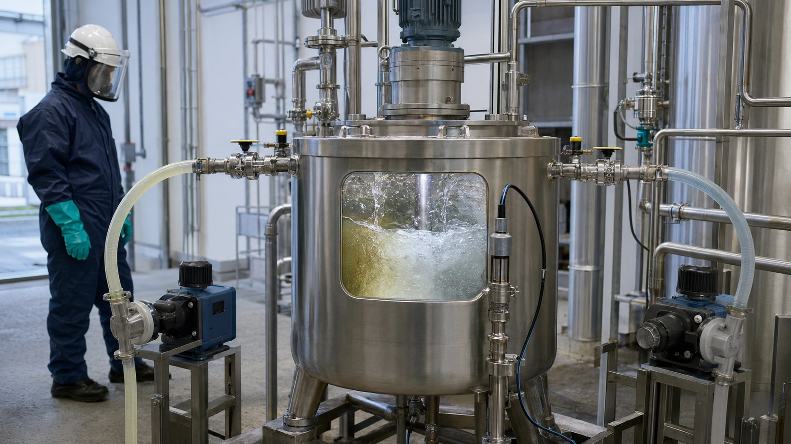

Neutralização de pH industrial: titulação, mistura e controle
Conteúdo técnico: ALOGY Engenharia · Atualizado em: 11/09/2026

O valor de pH é logarítmico e não mede diretamente a massa total de ácido ou base presente. Duas correntes com o mesmo pH podem exigir quantidades muito diferentes de reagente. Por isso, transformar simplesmente “diferença de pH” em litros por hora é uma premissa incorreta.
Titulação: a base para entender a demanda
A titulação de uma amostra representativa relaciona volume de reagente adicionado e pH alcançado. A curva também mostra regiões em que pequenas adições provocam grande mudança de pH — justamente onde atraso, mistura deficiente ou ganho excessivo podem causar overshoot.
Quando a solução de bancada é equivalente ao reagente do processo, uma primeira escala volumétrica é:
A conversão final precisa considerar concentração, densidade/pureza, variação da carga e condições reais.
Batelada e processo contínuo
- Batelada: permite misturar, dosar em etapas, aguardar estabilização e verificar a faixa antes de transferir.
- Contínuo: precisa acompanhar vazão e carga variáveis; feedforward por vazão pode antecipar a dose e o pH faz a correção mais lenta.
Em ambos, o sensor precisa enxergar uma amostra representativa depois de mistura e tempo de reação suficientes. Um eletrodo próximo demais da injeção pode alternar entre bolsões locais e induzir o controlador a “caçar” o setpoint.
pH sensor e qualidade da medição
Antes de ajustar PID ou bomba, confirme o sensor. Slope, offset, temperatura, junção, limpeza, instalação, aterramento e renovação da amostra podem produzir erro ou atraso.
Uma tendência aparentemente instável pode ser problema de medição, não de controle. Registre condição as-found, valide o eletrodo e só depois modifique a estratégia da malha.
PID, dead time e overshoot
A curva de neutralização pode ficar muito íngreme perto do alvo. Controle agressivo, analyzer/sensor atrasado ou mistura insuficiente tende a produzir oscilação. Ajustar PID sem medir o atraso total geralmente desloca o problema.
Conforme a aplicação, podem ser avaliados coarse/fine dosing, feedforward por vazão, limites de saída, rate limit, deadband e mais de um estágio de neutralização.
Intertravamentos e permissivos
A lógica deve tratar condições como falta de fluxo, nível baixo de reagente, agitador parado, pH inválido, falha da bomba e perda de permissivo de descarga. A ação segura é específica da instalação e deve vir da análise de risco/procedimento.
Diagnóstico da malha
- Compare pH online e referência no mesmo local/instante quando aplicável.
- Verifique slope, temperatura, limpeza, aterramento e estabilidade do sensor.
- Confirme scaling do PLC e comando real enviado à dosing pump.
- Meça a vazão da bomba na contrapressão de operação.
- Observe mistura, recirculação, estratificação e tempo de residência.
- Registre, no mesmo eixo de tempo, vazão, pH, saída do controlador, comando/feedback da bomba e estados de válvulas/agitadores.
Se a saída do controlador muda e a bomba entrega, mas o pH só responde minutos depois, há evidência de dead time de processo. Se o comando muda e a vazão dosada não acompanha, a investigação deve ficar antes da química.
Ferramentas e conteúdos relacionados
Aviso técnico
Este conteúdo não fornece uma dose universal de neutralizante nem substitui ensaio de titulação, compatibilidade química, análise de risco, procedimento de operação ou engenharia de processo. Reagentes corrosivos e reações exotérmicas exigem controles específicos da instalação.